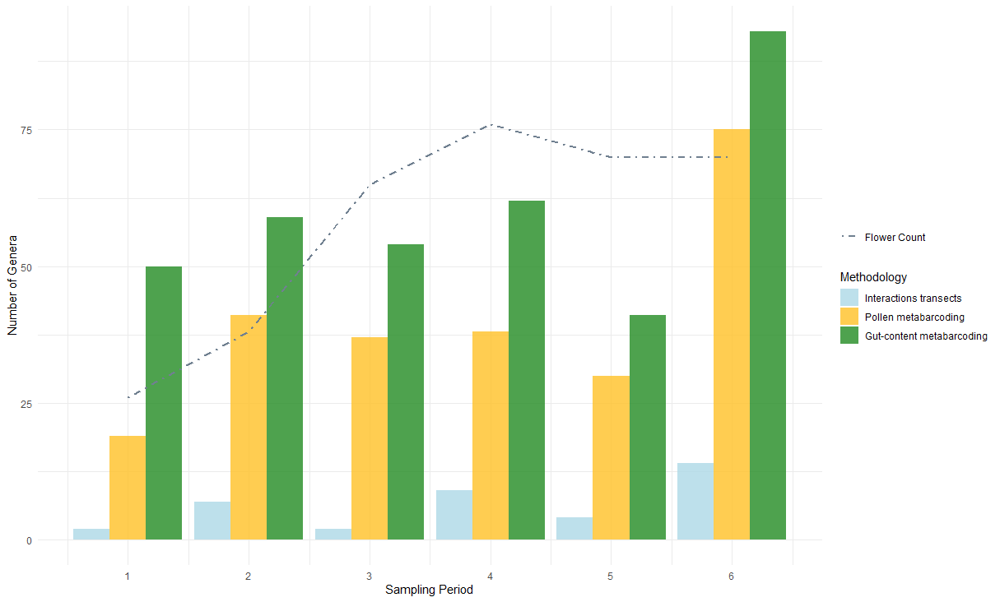

Coupling Diet and Pollen Metabarcoding with Field Surveys to Reveal Plant - pollinator Interactions
Christian Gostout 1, Luis J. Chueca 1, Jon Poza, Xabier Salgado-Irazabal1, Estefanía Tobajas1, Jennifer Rose1, Brais Hermosilla1, Marion Donald2, Manpreet Dhami2, Ainhoa Magrach1,3 1BC3 Basque Centre for Climate Change, Leioa, Spain, 2Bioeconomy Science Institute, Lincoln, New Zealand, 3IKERBASQUE, Basque Foundation for Science, Bilbao, Spain
Key-words: interaction, metabarcoding, network, pollinator
Abstract
Our understanding of plant-pollinator interaction networks hinges on the methods used to describe their nodes and links. Currently, most networks are built from field observations that may overlook many consumer–resource links. Further, interaction networks lack descriptive links that characterize interaction types and outcomes. Towards a more complete approach for building interaction networks, we compare plant interactions from the wild pollinator species, Bombus pascuorum, observed by three methodologies with different implications for interaction outcomes. We compare floral visitation interactions obtained from field observations to plant consumption interactions revealed by metabarcoding of gut contents and pollen transport interactions detected by corbicular pollen loads. Our approach adds functional context to plant–pollinator network links and reveals new interactions. We show that both metabarcoding approaches increase sampling efficiency and reveal links left unobserved by field observations of visitation, highlighting plant taxa that are not pollinator-dependent, yet constitute important dietary resources. Paired with floral diversity surveys, gut content results also reveal seasonal patterns in the spatial extent and functional diversity included in forage, which other methodologies fail to demonstrate. Metabarcoding data analyzed at the individual specimen level further reveal heterogeneity in plant resource use between pollen transport and consumption. Metabarcoding methodologies capture greater spatial, temporal, and taxonomic ranges, while field observations provide validating datasets with taxonomic precision.Our results show that integrating visitation, transport, and consumption data changes network topology and the roles of plant nodes, offering a more nuanced and complete map of interactions with clearer priorities for management. We advocate for defining links explicitly by their functions and combining methods to account for hidden structure in ecological networks.
Introduction
Pollination is a critical ecosystem service that is currently threatened by different global changes, including habitat loss, intensifying agriculture, pathogens, and invasive species (Klein et al., 2006). Pollinators critically support the reproduction of 94% of wild flowering plants and 75% of crop species (Vanbergen & Insect Pollinators Initiative, 2013), contributing to 35% of global food production (Klein et al., 2006). However, our understanding of this topic is incomplete given that, historically, the methodological approach to studying plant-pollinator interactions has been biased towards the plant side of interactions Bosch et al. (2009). As a consequence, the well-established relationship between pollinator diversity and the productivity of plant communities Katumo et al. (2022) lacks an equally developed mirrored perspective, describing the floral diversity that supports pollinator populations.
Network theory provides a useful framework to summarize patterns of plant–pollinator interaction (Burkle & Alarcón, 2011), but the strong influence of the interaction types that define links on the scope of networks has yet to be accounted for in most studies. Existing methodologies for reconstructing interaction networks tend to emphasize structural patterns, while overlooking the functional outcomes of interactions that are critical for understanding how plant communities support pollinators (Quintero et al., 2022). In eusocial bees, for example, plant interactions may have several outcomes. Bees consume plant material, including pollen, nectar, or even plant tissue Pashalidou et al. (2020). They also collect pollen on their corbicula for transport to the nest for feeding drones and larvae Vaudo (2015). Finally, visitation of the reproductive parts of flowers can have various outcomes for both the plant and pollinator, including pollination and pathogen transfer (Lignon et al. 2024). Interaction networks generally represent only one of these outcomes, although each is important to understanding how plant taxa support pollinators.
The importance of different outcomes in plant-pollinator interactions becomes clear when considering the biodiversity necessary to support pollinators across life stages. Because the resources needed for foraging adult pollinator nutrition can be different from those needed at the larval stage, or by other colony members Vaudo (2015), transported pollen may not completely represent the interactions necessary to sustain adult pollinator diets. This is especially true for bumblebees (Bombus spp.), which are able to evaluate pollen resource quality to make discerning forage choices Timberlake, Tew, et al. (2024a). Bumblebees make trial-and-error floral visits in order to find adequate forage (Selva et al., 2024), which may result in pollen transport without consumption. Conversely, consumption, or simply visitation, may occur without resulting in transport (Popic et al., 2012). Accounting for different interaction outcomes, such as visitation, transport, and consumption, is a critical next step in representing the network of plant diversity used by pollinators.
Shifting network studies to incorporate the pollinator perspective and leveraging the contributions of different methodologies can produce a more complete image of interaction networks. Research based on microscopy and molecular analyses of pollen load samples sourced from insect specimens can identify greater plant species diversity within interaction networks compared to studies based solely on field observations of floral visitation Bosch et al. (2009). Additionally, studies adopting a pollinator-centered view have revealed greater detail in forage preference trends, such as how pollinators use forage quality or quantity-based strategies Selva et al. (2024), seasonal changes (Leponiemi et al., 2023), life cycle timing, and metabolic specialization (Vaudo, 2015).
Genetic tools can detect plant-pollinator interactions that may be unobserved in pollen microscopy and traditional field surveys K. L. Bell et al. (2016), and target specific interaction types. Amplicon sequence metabarcoding of pollen samples complements the visitation interactions observed by field studies K. L. Bell et al. (2017), increasing species detection by 9 - 144% Smart et al. (2017) and network sampling completeness up to 30%, while reducing exaggeration of specialization (Arstingstall et al., 2021) and revealing interactions beyond the traditionally surveyed floral community Vere et al. (2017). Advances in the reliability and accessibility of amplicon sequencing have made these approaches more feasible for studying plant-pollinator interactions. Field surveys of visitation can now be effectively complemented by genetic tools (Milla et al., 2022) targeting specific interaction types, enhancing our understanding of interaction diversity.
Most studies applying metabarcoding to pollinator-sourced samples for constructing interaction networks analyze the external pollen loads of bees or pollen stored in nest reserves of honey and beebread Leontidou et al. (2021), despite limitations of these sampling targets. Pollen in these samples can come from the environment, even including accumulation of windborne material (Negri et al., 2015). To account for this, past studies have ignored detections of wind pollinated taxa Pornon et al. (2017), although this may introduce bias to results, given that many plant taxa have partial identities as wind or insect pollinated taxa (Saunders, 2018) A more fundamental issue with externally carried pollen and nest reserves is present in their restricted ability to represent interaction types. Studies of external pollen carried by eusocial bees, for example, have generally sequenced the DNA of pollen from the corbicula (e.g. Shi et al. (2025)). Corbicular pollen provides an easily obtained sample, containing a mixture of pollen collected for transport to the nest for brood feeding Vaudo (2015), which only directly observes interactions where pollen is transported (Arstingstall et al., 2021). Given the role of this pollen in bees’ life cycles, it is easy to overstep the interpretative capacity of these sample types when characterizing forage networks to describe diet, or successful pollination interactions.
Pollinator intestinal tracts (hereafter: guts) represent an additional source for observing interactions, specifically those related to consumption of pollen and other plant material Mayr et al. (2021). Plant DNA detected in gut contents can reveal interactions with consumption as the exclusive outcome, which, aside from flower visits, can include nectar robbing (Popic et al., 2012) and plant damage (Pashalidou et al., 2020). The gut content approach can also account for environmental contamination in external pollen and nest stores by highlighting oversights resulting from the exclusion of interactions with the anemophilous and partially-anemophilous plant taxa in external pollen studies. There is an accumulating body of evidence supporting the idea that pollinators must regularly search across functional groups of the plant community to meet their nutritional needs Pojar (1973), although little attention has been given to these observations as a potentially important part of plant-pollinator networks (Saunders, 2018). This understudied component of pollinator forage together with the surprising lack of genetic analyses of pollinator gut contents, represents a clear knowledge gap and an opportunity to uncover finer detail in pollinator interaction networks.
Our objective is to determine whether a combined methodological approach can provide further insights into pollinator forage ecology and plant-pollinator interaction networks by expanding interaction detections and providing context to network links. We assess how metabarcoding of pollinator gut contents can complement or challenge the characterization of plant-pollinator interaction networks described by more common methodologies, including field surveys of plant pollinator interactions and external pollen load metabarcoding. To this end, we compare interaction networks constructed from each of these methodologies for a single model pollinator, Bombus pascuorum, an easily identified bumblebee common to most of Europe (Lecocq et al., 2015). Our focus on a single pollinator species holds pollinator identity constant and attributes differences in network structure to methodology, rather than to variation among pollinator species. We hypothesize that the consumption interactions detected in gut metabarcoding will include a network of plant taxa distinct from those detected by other methodologies. Although we expect overlap between networks constructed by different methodologies, we expect to observe previously overlooked interaction network structure, including new links and significance of network links. Ideally, the resulting combination of observations will generate a network that will elevate our capacity to detect meaningful plant-pollinator interactions, and learn more about interaction types and implications for pollinator health.
Methods
Our sample collection was conducted in Gorbeia Natural Park, a protected area in Spain. Within Gorbeia, we selected 16 sampling sites located within the mixed zones of meadows and shrublands found at higher elevations within the park. We conducted fieldwork from early April to the end of July 2023 covering the main flowering period and peak annual pollinator activity in Gorbeia. On each sampling day during this timeframe, we visited field sites in pairs. Sampling days were organized into six periods, in which we sampled each site pair once per period. We conducted three types of surveys during daily peaks of pollinator activity, including floral diversity surveys (“flower counts”), interaction transect surveys, and Bombus pascuorum specimen collection for amplicon sequencing analyses.
Interaction transects and floral resource availability surveys
We used the one 250 m transect at each site for both interaction transect and flower count surveys, recording observations within ~2 m of the transect line. Interaction surveys were conducted three times per day, each lasting 1 h. All insects observed contacting the reproductive parts of herbaceous flowers within the transect were recorded; for this study, we retained only Bombus pascuorum interaction data. Surveys were spaced by ~2 hours (~11:00, ~13:00, ~15:00), and transects were walked at a constant pace to cover the full length within an hour. For each site and sampling period, one flower count was conducted by recording all of the flowering herbaceous species within the transects.
Bombus pascuorum specimens
For every period visit at each site, we collected up to five B. pascuorum specimens for molecular analyses (N = 126). We brought specimens back from the field and froze them at -20°C until processed. In the lab, we extracted the entire gut and honey stomach of B. pascuorum individuals. Additionally, if present, we collected pollen pellets from the corbicula of specimens into sterile 1.5 mL centrifuge tubes. Pollen samples were stored individually by specimen sample at -20°C.
Gut Content DNA extraction
Genomic DNA was extracted from B. pascuorum guts using the NucleoSpin® 96 Soil kit (Macherey-Nagel, Düren, Germany) and amplified in duplicate using the DFD forward and ASDFAS reverse primers. To avoid site and period bias, all samples were randomized using a randomizer program before the DNA extraction. We followed the kit manufacturer protocol, only adjusting centrifuge times to account for the lower maximum velocity of the large centrifuge used to process large sample numbers simultaneously (See Supporting Information). To confirm successful DNA extraction, Nanodrop tests were performed on random samples.
DNA extraction from corbicular pollen pellets
DNA was extracted from pollen pellets (N = 25) using the Machery-Nagel NucleoSpin 8 Food kit, including additional initial steps recommended by the kit’s supplementary protocol for pollen DNA extraction (See Supporting Information). Qubit fluorometry tests using random samples confirmed successful DNA extractions.
Amplicon Sequencing
Our metabarcoding sequence libraries were built by amplifying and sequencing the internal transcribed spacer (ITS2) region of the ribosomal DNA in our extract samples. For all samples, we used existing primers for amplification of the ITS2 region (See Supporting Information). Libraries were sequenced on an Illumina platform to generate paired-end raw reads. We used demultiplexed raw sequence data, with primer and adapter sequences removed, in further bioinformatic analyses.
Bioinformatics: taxonomic assignment and contaminant analysis
Raw Illumina sequences were processed using the DADA2 bioinformatics pipeline (Callahan et al., 2016). Taxonomy was added to the ASVs using an existing reference sequence database (K. Bell, 2021), which provided reference sequences at the species level for all but 21 of the species present in the study area, all of which were identifiable to the genus level in the database. We removed likely contaminants and misidentified ASVs from our bioinformatics results using a three-step screening process. First, ASVs were analyzed for contaminants using the decontam package in R (Davis et al., 2018). Second, we conducted a BLAST search using ITS2 Database (Ankenbrand et al., 2015) to verify taxa that were identified by only one ASV within our results. Finally, the remaining list of taxa was assessed by a local botanist for remaining errors.
Statistical analysis
We analyzed the results of each methodology together using statistical tools for comparing interaction plant communities across methodology, time, and individual specimens. As an initial broad test of whether the methodologies detected interactions with different plant communities, we used binary presence-absence matrices to compare the communities detected by each methodology on each sampling day. Data were aggregated by sampling day for all sets of observations. Community composition was contrasted using the Raup-Crick dissimilarity index in a PERMANOVA test within the R package, vegan (Oksanen et al., 2024)with methodology as the independent variable. Further pairwise comparisons of these data were made by subsetting the dissimilarity matrix used in the first test by each unique methodology pair and using multiple PERMANOVAs to test the pairs. We also used vegan to observe beta dispersal of our data as a further means of understanding PERMANOVA results.
Among our B. pascuorum specimens, 25 provided both pollen and gut samples. Using the data from this subset of samples, we compared the plant communities detected by the two metabarcoding methodologies at the individual sample level without aggregation. As before, Raup-Crick dissimilarity matrices were calculated using binary detection data from pollen and gut detections. PERMANOVA compared both methodologies’ detected communities in strata defined by specimens of sample origin.
B. pascuorum - plant interaction Network Metrics
We used interaction frequencies from the three methodologies to build B. pascuorum–plant interaction networks and calculate species-level metrics for plant importance and specialization. Plant importance was the proportion of all B. pascuorum interactions involving a given plant genus. For metabarcoding and pollen-load data, interactions were counted as the number of individual bee samples in which a plant taxon was detected; for observational data, interactions corresponded to recorded visits. Species-level specialization (d’) was calculated following Blüthgen et al. (2006), as implemented in the R package bipartite (Dormann et al., 2009).
We created a composite interaction network for B. pascuorum, incorporating the data of each methodology and the interaction outcome types as network metadata. Network nodes included B. pascuorum and the list of plant genera detected across the three interaction datasets. Single plant genera were assigned between one and three links corresponding to interaction type, depending on their detection across methodologies.
Results
Interaction networks compared to floral diversity
Comparing flower count surveys to the plant networks detected by the three interaction methodologies, we observed that B. pascuorum did not interact with the entirety of the available floral diversity within our transects (Figure 1). Flower counts identified a total of 117 flowering plant genera across the sampling season. Among these, 39 were not included within the interaction networks of any of the other methodologies. By inherent design, the 27 genera identified by interaction transects were a subset of the diversity observed by flower counts, amounting to 23% of the floral taxa identified across the season. Gut content metabarcoding detected 58% of the taxa observed by flower counts, and corbicular pollen metabarcoding detected 53%. Unlike the results of interaction transects, the taxa detected by metabarcoding methodologies were not restricted to those included within the potential interaction network indicated by flower counts.
Comparison of interaction methodology sensitivity
Both metabarcoding methodologies detected multiple unique taxa, while interaction transects detected fewer total taxa, with zero unique interactions (Figure 1). Gut content metabarcoding detected interactions with 131 total plant genera, including 33 taxa uniquely identified by this methodology. The total diversity identified by this methodology included all of the genera identified by interaction transects. Corbicular pollen metabarcoding detected 123 plant genera, with 31 uniquely detected genera. Again, these genera included all of those identified by interaction transects. The two metabarcoding methodologies shared 83 common plant genera, representing 67% of the total corbicular pollen diversity and 63% of the gut content diversity.
Figure 1: Total diversity and overlap of plant genera observed by four observation methodologies: transect surveys of floral diversity (“flower counts”) and B. pascuorum - flower interactions, and metabarcoding of plant DNA in corbicular pollen and gut contents of B. pascuorum. For the three interaction observation methodologies, the total number of taxa represents the degree of B. pascuorum in the interaction network constructed by the corresponding methodology.
Taxonomic diversity observed by sampling period revealed different temporal patterns in flowering taxa and interaction diversity over the sampling season (Figure 2). While there was a net increase in available floral taxa and interactions from the first to last period, peak floral diversity was observed in period four, while peak interactions were observed in period six. Metabarcoding methodologies consistently detected more taxa than interaction transects, with gut content metabarcoding detecting more taxa than the other interaction methodologies in all periods. In periods one, two, and six, before and after the peak observed floral diversity, gut content metabarcoding detected more taxa than were observed in flower counts. During periods three through five, floral diversity was greater than gut content diversity.

Figure 2: Taxonomic diversity in Bombus pascuorum interaction networks over six sampling periods (April - August, 2023) observed through floral visitation surveys and ITS2 metabarcoding of DNA extracted from bumblebee gut contents and corbicular pollen loads. The number of plant genera indicated is a cumulative raw value for each methodology and period, with no standardization for sampling effort. Interaction diversity for transects is represented by the total number of taxa observed over each transect and sampling day, for each period. For metabarcoding methodologies, interaction diversity is the total number of plant genera observed across all samples collected during the given period. Available flowering taxa diversity within transects is displayed as a contextualizing data set to show the seasonal floral peak.
Functional diversity observations
While the taxa included in the interaction networks of flower counts and interaction transects only included taxa from the entomophilous community, both metabarcoding methodologies detected taxa from the anemophilous community as well. Anemophilous plant taxa represented 20% (N = 36) of the total identified plant taxa between the two methodologies (N = 172), including 19 genera from Poaceae, eight tree/woody plant genera, and nine other herbaceous genera (Table S2). During the first, second, and sixth periods, when gut content metabarcoding detected more taxa than were observed in the entomophilous community of the transects. Of the taxa observed by gut metabarcoding during these periods, an average of 14% were anemophilous or partially anemophilous (Figure S1).
Plant community composition across methodologies
Plant communities detected by each methodology were compared for statistical evaluation of the differences between results. Binary presence-absence matrices were used to compare the communities detected by each methodology, aggregated by sampling day. Community composition was contrasted using the Raup-Crick dissimilarity index within a PERMANOVA test, including methodology as the independent variable (Table 1). A PERMANOVA test (Oksanen et al., 2024) of the differences in taxonomic composition across methodologies indicated that methodology has a significant effect (P < 0.001) on the detected plant community involved in pollinator interactions, accounting for 28% of the variation in detected interaction networks. In pairwise comparisons (Table 2), the flower count communities differed significantly (P = 0.001, Holm-Bonferroni adjusted) from those of all other methodologies. Between pairs of other methodologies, no significant differences were observed. Differences in methodologies were also assessed in an ordination using non-metric Multidimensional Scaling (nMDS), yielding a stress value of 0.17 (Figure 3). Average distances to the group centroid indicated by beta dispersal showed high dispersal of interaction transect data (distance to mean = 0.62) compared to the more centered metabarcoding and flower count results (distance to mean ≤0.10). An ANOVA test of mean dispersal by methodology indicated a significant difference (P < 0.001) in dispersal attributed to methodology.
Table 1. Results of testing the effect of methodology on the community composition of plant taxa detected by four observation methodologies: transect surveys of floral diversity and B. pascuorum - flower interactions, and metabarcoding of plant DNA in corbicular pollen and gut contents of B. pascuorum. Methodology’s effect was tested using a Permutational Multivariate Analysis of Variance (PERMANOVA, Oksanen et al. 2022), using the Raup-Crick dissimilarity index with 9999 permutations. The test indicated that up to 28% of the variation in community composition may be explained by the influence of methodology.
| Df | SumOfSqs | R2 | F | Pr(>F) | |
|---|---|---|---|---|---|
| Model | 2 | 0.217003 | 0.0134103 | 0.6524416 | 0.6477 |
| Residual | 96 | 15.964866 | 0.9865897 | NA | NA |
| Total | 98 | 16.181869 | 1.0000000 | NA | NA |
Table 2. Results of pairwise tests comparing the community composition of plant taxa detected by four observation methodologies: transect surveys of floral diversity and B. pascuorum - flower interactions, and metabarcoding of plant DNA in corbicular pollen and gut contents of B. pascuorum. Methodologies were compared by repeating Permutational Multivariate Analysis of Variance (PERMANOVA, Oksanen et al. 2022) for the results of each methodology pair. PERMANOVA tests used the Raup-Crick dissimilarity index with 9999 permutations, and adjusted p-values using the Holm–Bonferroni method. Pairwise tests indicated a significant difference between surveys of floral diversity (“flower count”) and the three other interaction methodologies. No differences were observed between the three interaction observation methodologies.
| Methodology 1 | Methodology 2 | DF1 | DF2 | R² | F | p | Adjusted p |
|---|---|---|---|---|---|---|---|
| flower count | gut metabarcoding | 1 | 1 | 0.534 | 161.69 | <0.001 | <0.001 |
| flower count | pollen metabarcoding | 1 | 1 | 0.376 | 64.95 | <0.001 | <0.001 |
| flower count | interaction | 1 | 1 | 0.230 | 37.64 | <0.001 | <0.001 |
| gut metabarcoding | pollen metabarcoding | 1 | 1 | 0.130 | 9.38 | 0.038 | 0.114 |
| gut metabarcoding | interaction | 1 | 1 | 0.010 | 0.80 | 0.55 | 1 |
| pollen metabarcoding | interaction | 1 | 1 | -0.024 | -1.13 | 0.997 | 1 |

Figure 3: Non-metric dimensional scaling (nMDS) of interaction plant communities for Bombus pascuorum as detected by three interaction observation methodologies and a floral diversity survey. Interaction methodologies included floral visitation surveys and ITS2 metabarcoding of DNA extracted from bumblebee gut contents and corbicular pollen loads. Observations from each methodology are aggregated by sampling day, reduced to binary presence/absence data, and compared in ordination using the Raup-Crick dissimilarity index (ordination stress = 0.17). PERMANOVA comparisons of the communities represented by NMDS show no significant differences between the interaction methodologies. Floral diversity survey results were significantly different (P < 0.001) from each of the interaction methodologies. As visible in the nMDS polygons, interaction transect data were more dispersed (distance to mean = 0.62) than the other methodologies (distance to mean ≤0.10). Significant differences in data dispersal attributed to methodology were indicated by an ANOVA test.
Specimen level metabarcoding results
Taxonomic detections from the two metabarcoding methodologies were compared by individual specimens. For specimens providing both types of samples, fewer taxa were detected in gut content samples (mean = 12 genera, sd = 9) than in pollen samples (mean = 18 genera, sd = 7). Comparing the number of taxa identified by each specimen for both sample sources, 20% of the detected taxa (mean = 6 genera, sd = 3) were shared, on average. A PERMANOVA test of the differences in taxonomic composition between the two methodologies using sample specimen as a blocking factor showed a significant effect (P < 0.01) of metabarcoding sample type on the resulting plant community (Table S3). This effect accounted for 17% of the variation in detected interaction networks between the two methodologies at the individual level.
Species Level Interaction Network Metrics
We calculated the values of network metrics at the species level for B. pascuorum and the plant taxa within its interaction networks as constructed based on different the three interaction methodologies. B. pascuorum as an interaction network node had the highest degree of 131 within the gut content metabarcoding network, followed by 123 in the corbicular pollen metabarcoding network. B. pascuorum had the lowest degree in the interaction transect network, with a value of 27. B. pascuorum interaction specialization, calculated as d’ (Blüthgen et al., 2006), decreased across the sampling season when calculated based on interaction transect results and pollen metabarcoding results, while specialization maintained more or less stable for gut content metabarcoding results (Figure 4). Interaction transect data indicated complete specialization in the first period. Importance of the plant taxa within the B. pascuorum interaction networks from different methodologies identified Lotus as the most central plant genus in each network, although network importance structure differed between transect and metabarcoding methodologies (Figure 5). The two metabarcoding networks showed more balanced importance across interaction taxa, while the top plant taxa of interaction transect network occupied a greater share of the total observed interactions.

Figure 4: Specialization of plant interactions for B. pascuorum as indicated by networks constructed from three interaction observation methodologies. Specialization was calculated as d’ using the methodology of Blüthgen et al. (2006), with d’ = 1 representing perfect specialist behavior. Specialization of B. pascuorum for each period was calculated relative to interaction data from the other periods.
Figure 5. Plant genus “importance” within B. pascuorum interaction networks constructed from three interaction observation methodologies (a) interaction transects, (b) gut content metabarcoding, and (c) corbicular pollen metabarcoding. Importance was calculated by methodology for each plant genus as the proportion of total plant interactions observed by the given methodology represented by interactions with the specific plant genus. Importance is represented in a treemap, with block size proportional to importance, and color scaled to minimum and maximum values observed by each methodology.
Discussion
We chose a bumblebee as our model wild pollinator for numerous reasons. On top of the importance of bees in pollen transport relative to other pollinators (Alarcón, 2010), bumblebees specifically offer the advantage of abundance and ease of observation in the wild, as well as relevance due to their common use in agricultural settings (Velthuis & Doorn, 2006) and climate dependence (Sirois-Delisle & Kerr, 2018) (Maebe et al., 2021). Given the quantity of existing research on bumblebees and their shared ecology with other pollinators, their environmental and nutritional needs are already broadly defined. Bees generally need a combination of pollen and nectar to meet their nutritional needs (Vaudo, 2015). Pollen is the main source of protein and fats in the bee diet Vaudo (2015) [Steffan et al. (2019)](Dharampal et al., 2019), and a diversity of pollen sources in the diet promotes healthy individual physiology (Di Pasquale et al., 2016). For this reason it can be generally stated that plant diversity supports bee populations, a notion that is supported by the observed effect of landscape composition on the bee microbiome and its implications for individual health (Bosmans et al., 2018; Jones et al., 2018). While these relationships indicate that a greater diversity of potential interactions in plant-bee networks promotes bee health, it is also important to understand the implications of different interaction network links for plants and pollinators, network changes over time and space, and the functional roles of network nodes. Our analysis uses the bumblebee, Bombus pascuorum as a model species for investigating how plant-pollinator interaction observation methodologies can provide insight on interaction specifics.
Similar to the results of Quintero et al. (2022)’s evaluation of seed dispersal interaction observations, we found unique and complementary abilities for the three pollinator-perspective based methodologies for observation of B. pascuorum plant interaction networks. We compared each methodology in terms of the diversity of detected interaction nodes (B. pascuorum degree), community composition, and relative sampling effort in network construction. Both metabarcoding methodologies far outperformed interaction transects in terms of detected taxonomic diversity (Figure 1). Considering this, and the time dedicated to data collection for both methodologies, metabarcoding also outperformed interactions in terms of efficiency. Interaction transects did outperform metabarcoding methodologies in providing taxonomic resolution, as we were able to detect interactions at the species-species level, whereas metabarcoding was only able to provide species-genus level interactions. The interaction networks constructed by each methodology also showed different topology and patterns of specialization for B. pascuorum, exaggerating interaction specialization and the importance of the plant taxa with the highest interaction frequencies within the network (Figure 5). Specialization based on interaction data showed perfect specialist behavior (d’ = 1) for the first sampling period, followed by high specialization across the following periods (Figure 4). While a strong link between Bombus pascuorum and certain early season taxa, such as Vicia pyrenaica, is previoulsy documented (Artamendi et al. in prep), perfect specialist behavior was not a plausible result, nor were the magnitude of the d’ values likely given the results of the other two methodologies, which estimated far lower specialization and reconstructed more evenly spread network models.
Comparing the two metabarcoding methodologies, gut content metabarcoding outperformed corbicular pollen metabarcoding in terms of taxonomic diversity captured for each sampling period, and over all. The number of gut samples was equal to the number of individuals captured (n = 126), while not all captured individuals carried sufficient pollen for genomic DNA extraction (n = 25). Given this, gut content metabarcoding was the more efficient methodology. On the individual sample level, however, a higher mean number of taxa per sample was detected in pollen (mean =18) samples than in gut samples (mean =12). Therefore, in study designs where number of pollen and gut samples is easier to balance, pollen may be a more efficient sample source for maximizing taxonomic detections. The temporal distribution of taxonomic diversity and the specialization index for B. pascuorum observed by gut content metabarcoding were also the key results in revealing seasonal forage patterns. We observed more forage taxa present in the gut contents than were flowering within our transects in the early and late parts of the sampling season (Figure 2), on either end of the mid-summer floral peak. Additionally we also observed a maintained level of interaction specialization across all of the periods for gut content metabarcoding, while other methodologies indicated a decrease in specialization across the season. These combined results suggested that the composition of the plant community present in the consumption targeted forage network was likely distinct from that of the floral community present within our other surveys.
We observed a complementary dynamic between methodologies through overlap in network community composition. We observed the expected ordination overlap (Figure 3) between flower counts and interaction transects inherent in our study design, although statistically the communities of the two methodologies differed (Table 1). We attributed the statistical difference to the large difference in number of taxa observed between the two transect methodologies. Between the three interaction methodologies, no statistical differences were found (Table 1), although the data dispersal differences were significant between the interaction observations and metabarcoding methodologies. We interpreted dispersal differences as a result of the differences in spatial and taxonomic coverage offered by each methodology. The habitat and plant community types between each transect vary, while metabarcoding is able to capture all interactions coming from the broader landscape and plant community, resulting in more consistent results between sites and sampling days. Both metabarcoding methodologies overlapped minimally with the flower count community (Figure 3) and showed a statistical difference to the results of this methodology. This suggested that the interaction network included parts of the plant community beyond the floral taxa observed within our transects. This was partially to be expected, given that the metabarcoding methodologies and flower counts had a core difference in purpose. The latter ultimately did not represent a methodology for observing interactions, but rather a survey of entomophilous taxa that could be included in interactions. As with interaction transects, flower counts were also limited in space, time, and taxonomy, while metabarcoding methodologies were unrestricted by these boundaries.
Our results suggest that metabarcoding has a vast ability to expand our existing understanding of pollinator interaction networks. Consistent with previous comparisons between field and metabarcoding observation of plant-pollinator interactions (Milla et al., 2022) (Baksay et al., 2022) (Smart et al., 2017), metabarcoding increased observed interaction diversity by more than six-fold compared to interaction transect results. Metabarcoding also detected a combined 93 total plant taxa that were not included in the 117 identified by the floral diversity surveys detected within our transects. This, along with the temporal data, suggested that a large number of taxa within the B. pascuorum interaction network came from beyond the spatial extent of our transects and/or outside of the plant community traditionally sampled in plant-pollinator network surveys. Our reference database of sequences included 68,420 ITS2 sequences, including all dicotyledons and select additional plant sequences (K. Bell, 2021), allowing metabarcoding to identify taxa from functional groups beyond the floral community sampled in our transects (Figure S2, Table S2). Through metabarcoding, we observed interactions with a variety of taxa outside of the entomophilous meadow and shrubland plant community, including trees and shrubs, grasses, and other herbaceous plants. The diversity of plant groups observed within our metabarcoding data indicated that B. pascuorum forages a greater diversity and spatial range than previously expected in order to maintain a stable diversity of consumed pollen, as indicated by the temporal distributions of gut metabarcoding network data.
Our observations of interactions with the anemophilous community are supported by similar previously documented interactions (Selva et al., 2024) (Milla et al., 2022) (Timberlake, Vere, et al., 2024) (Vere et al., 2017) (Tanaka et al., 2020) [Terrell & Batra (1984)](Pojar, 1973), and have especially intriguing implications for bumblebee forage behavior. Previous studies using external pollen metabarcoding have removed wind-pollinated taxa from their analyses (e.g.(Tanaka et al., 2020) (Pornon et al., 2017)). This is understandable, given the argument that wind-borne pollen in samples may represent false positive interactions (Pornon et al., 2017) (Negri et al., 2015). Our gut content results, however, suggest that the practice of removing these taxa as contaminants is a large oversight, especially so if using external pollen loads as standalone proxies for forage networks. Our observation of DNA from anemophilous taxa within gut samples suggest that interactions with these taxa may be more than coincidental interactions with wind-borne pollen. Indeed, beyond consumption for adult nutrition, there are previous indications that pollen from flowering trees supports colony establishment success and low larval mortality (Wood et al., 2022). Our results support the hypothesis that bumblebees forage selectively for consumption and transport of high quality pollen (Ruedenauer et al., 2016) (Timberlake, Vere, et al., 2024), adapting their forage to take advantage of the best available resources as they change with environmental variability (Selva et al., 2024). Our detection of DNA from anemophilous pollen sources across methodologies indicates intentional forage interactions with these taxa as a means of meeting the nutritional needs for bumblebees at various lifecycle stages.
Existing hypotheses for pollinator forage adaptations in response to environmental changes have suggested that bees expand forage diversity beyond the flowering community and across habitats in order to survive annual “hunger gaps” (Timberlake, Tew, et al., 2024b) (Becher et al., 2024), when blooming floral species are limited (Timberlake, Vere, et al., 2024) (Wood et al., 2022). Our observation of high forage diversity in gut contents before and after the floral peak, distinct interaction and flowering taxa network topologies, and consumption of taxa across functional groups, all together support these hypotheses. While the community beyond the physical area of our transects likely played a large role in these observations, the detection of anemophilous taxa in gut contents during the periods where forage diversity was higher than flowering diversity provide evidence for a community driven component as well. These observations show how the broader taxonomic detection capacity of metabarcoding allows for detection of interactions that otherwise would go unobserved by flower visitation surveys. As the first study to employ metabarcoding as a means of detecting plant taxa represented in pollinator gut contents, the success of our methodology, especially as compared to alternative existing methodologies, offers a promising direction for future plant-pollinator interactions studies. This is especially evident when considering the resolution of the metabarcoding data presented here, which have been simplified for comparative purposes.
Our comparative analysis understates the resolution of our metabarcoding data. We chose to aggregate our metabarcoding data by sampling day while comparing community composition across methodologies in order to balance sampling effort. By doing so, we disregarded the opportunity to study interactions at the individual level offered by metabarcoding (Gous et al., 2019) (K. L. Bell et al., 2016). To demonstrate the value of this resolution, we compared the interaction data from individual specimens with both pollen and gut content samples. The low proportion of shared taxa between both sample sources at the individual level indicated a difference in the communities detected within both sample sources that was previously unobserved when methodologies were compared at the sampling day level. To clarify the different indications of these results, we also tested the difference in community composition between both methodologies at the individual level, this time observing a significant difference between the two methodologies.
The differences and commonalities in the communities detected by each methodology may reflect the result of selective interactions made by B. pascuorum. Many of our gut content samples were sourced from queens, which forage exclusively for the inmediate nutrition needed for ovary development (Leach & Drummond, 2018) (Vogt et al., 1994). Our pollen samples, on the other hand, would have come from workers foraging both for individual nutrition and for pollen to transport to the nest for larval consumption (Vaudo, 2015). In these samples it is possible that there existed more overlap between interaction types. Focusing on similarities between the two individual level datasets, the repeated detection of certain taxa by both methodologies increased confidence in these identifications, again demonstrating the complementary potential of these methodologies. For example, Vicia was observed by both methodologies across all specimens with both sample types in the first three periods. This adds to our previous knowledge from interaction transects of the strong relationship between Vicia pyrenaica and B. pascuorum (Artamendi et al., unpublished data), emphasizing the value of field surveys in validating laboratory based methodologies.
We observed complementary roles between the interaction methodologies. The statistical similarities between observed plant communities suggests robustness between each of them, and the inherent implications of the sample sources of each provide varied means of interpreting different interactions. Interaction transects provide a valuable field-based perspective, which is integral in ecology, and especially important as it becomes increasingly laboratory based (Mantegna, 2024) (Nanglu et al., 2023), and as molecular tools continue to overcome their limitations (Yuan et al., 2025). Given the lower sampling efficiency of interaction transects, incorporating them as a validation of others may be the best way to integrate this methodology into future studies. Field observations can fill gaps left by metabarcoding methodologies, such as confirmation of pollination efficacy in interactions, or interaction frequency. Additionally, they provide species level taxonomic resolution which can fill in lower taxonomic levels unreached by bioinformatic processing. As the external pollen load is a direct observation of the pollen that can be transferred between flowers, the taxa identified by pollen metabarcoding represent those most likely to benefit from pollination services. Pollen metabarcoding may also be a good starting point for identifying which plants provide pollen with optimal macronutrients for larval development. In a similar manner, gut content metabarcoding provides an important perspective on the nutritional needs of actively foraging pollinators, identifying which taxa provide pollen as food for supporting this activity (Li et al., 2025). Knowing which taxa are actually ingested by pollinators is especially useful information for identifying taxa that facilitate microbiota exchange and acquisition during plant interactions (Cullen et al., 2021) (Keller et al., 2021) , including parasite and disease transfer (Lignon et al., 2024). Although they are not equal, our research highlights overall that each methodology offers advantages and disadvantages in terms of sensitivity, sampling effort, and perspective.
Each interaction methodology, with the exception of gut content metabarcoding, has been used previously as a standalone means for characterizing plant-pollinator interaction networks (e.g. (Magrach et al., 2023) (Devriese et al., 2024)). We present gut content metabarcoding as a promising new methodology for describing plant-pollinator interaction networks, but above all, we advocate for using combinations of methodologies to construct interaction networks with descriptive links. Apart from pairing with other plant-pollinator interaction methodologies, the ability to pair gut content metabarcoding with other microbiome studies is highly intriguing for revealing linked interactions within the plant-pollinator-microbe network. The microbial exchange involved in plant pollinator interactions is an important component of pollinator interactions that is yet to be fully explored (Lignon et al., 2024) (Keller et al., 2021) (Cullen et al., 2021) (Vannette, 2020) . Further application of gut content metabarcoding to plant-pollinator interaction studies will hopefully uncover new cases of synergy with other analyses, as well as further methods of interpreting the results of this methodology. For example, the ability to quantify interaction frequency using metabarcoding at the individual level would be a large advance in the applicability of metabarcoding for gut content or pollen samples. Given our observations, we conclude that the keys to making such methodological advances are likely to lie in finding the connections with similar data sources that can fill the gaps in the information provided by our current methodologies.
References
Alarcón, R. (2010). Congruence between visitation and pollen-transport networks in a California plantpollinator community. Oikos, 119(1), 35–44. https://doi.org/10.1111/j.1600-0706.2009.17694.x
Ankenbrand, M. J., Keller, A., Wolf, M., Schultz, J., & Förster, F. (2015). ITS2 Database V: Twice as Much: Table 1. Molecular Biology and Evolution, 32(11), 3030–3032. https://doi.org/10.1093/molbev/msv174
Arstingstall, K. A., DeBano, S. J., Li, X., Wooster, D. E., Rowland, M. M., Burrows, S., & Frost, K. (2021). Capabilities and limitations of using DNA metabarcoding to study plantpollinator interactions. Molecular Ecology, 30(20), 5266–5297. https://doi.org/10.1111/mec.16112
Artamendi, M., Martin, P. A., Bartomeus, I., & Magrach, A. (2025). Loss of pollinator diversity consistently reduces reproductive success for wild and cultivated plants. Nature Ecology & Evolution, 9(2), 296–313. https://doi.org/10.1038/s41559-024-02595-2
Baksay, S., Andalo, C., Galop, D., Burrus, M., Escaravage, N., & Pornon, A. (2022). Using metabarcoding to investigate the strength of plant-pollinator interactions from surveys of visits to DNA sequences. Frontiers in Ecology and Evolution, 10. https://doi.org/10.3389/fevo.2022.735588
Becher, M. A., Twiston-Davies, G., Osborne, J. L., & Lander, T. A. (2024). Resource gaps pose the greatest threat for bumblebees during the colony establishment phase. Insect Conservation and Diversity, 17(4), 676–689. https://doi.org/10.1111/icad.12736
Bell, K. (2021). ITS2 july 2021. figshare. https://doi.org/10.6084/M9.FIGSHARE.14936004.V1
Bell, K. L., Fowler, J., Burgess, K. S., Dobbs, E. K., Gruenewald, D., Lawley, B., Morozumi, C., & Brosi, B. J. (2017). Applying pollen DNA metabarcoding to the study of plantpollinator interactions. Applications in Plant Sciences, 5(6), 1600124. https://doi.org/10.3732/apps.1600124
Bell, K. L., Vere, N. de, Keller, A., Richardson, R. T., Gous, A., Burgess, K. S., & Brosi, B. J. (2016). Pollen DNA barcoding: Current applications and future prospects. Genome, 59(9), 629–640. https://doi.org/10.1139/gen-2015-0200
Blüthgen, N., Menzel, F., & Blüthgen, N. (2006). Measuring specialization in species interaction networks. BMC Ecology, 6(1), 9. https://doi.org/10.1186/1472-6785-6-9
Bosch, J., Martín González, A. M., Rodrigo, A., & Navarro, D. (2009). Plantpollinator networks: adding the pollinator’s perspective. Ecology Letters, 12(5), 409–419. https://doi.org/10.1111/j.1461-0248.2009.01296.x
Bosmans, L., Pozo, M. I., Verreth, C., Crauwels, S., Wilberts, L., Sobhy, I. S., Wäckers, F., Jacquemyn, H., & Lievens, B. (2018). Habitat-specific variation in gut microbial communities and pathogen prevalence in bumblebee queens (Bombus terrestris). PLOS ONE, 13(10), e0204612. https://doi.org/10.1371/journal.pone.0204612
Burkle, L. A., & Alarcón, R. (2011). The future of plantpollinator diversity: Understanding interaction networks across time, space, and global change. American Journal of Botany, 98(3), 528–538. https://doi.org/10.3732/ajb.1000391
Callahan, B. J., McMurdie, P. J., Rosen, M. J., Han, A. W., Johnson, A. J. A., & Holmes, S. P. (2016). DADA2: High resolution sample inference from illumina amplicon data. Nature Methods, 13(7), 581–583. https://doi.org/10.1038/nmeth.3869
Cullen, N., Fetters, A., & Ashman, T.-L. (2021). Integrating microbes into pollination. Current Opinion in Insect Science, 44, 48–54. https://doi.org/10.1016/j.cois.2020.11.002
Davis, N. M., Proctor, D. M., Holmes, S. P., Relman, D. A., & Callahan, B. J. (2018). Simple statistical identification and removal of contaminant sequences in marker-gene and metagenomics data. Microbiome, 6(1), 226. https://doi.org/10.1186/s40168-018-0605-2
Devriese, A., Peeters, G., Brys, R., & Jacquemyn, H. (2024). The impact of extraction method and pollen concentration on community composition for pollen metabarcoding. Applications in Plant Sciences, 12(5), e11601. https://doi.org/10.1002/aps3.11601
Dharampal, P. S., Carlson, C., Currie, C. R., & Steffan, S. A. (2019). Pollen-borne microbes shape bee fitness. Proceedings of the Royal Society B: Biological Sciences, 286(1904), 20182894. https://doi.org/10.1098/rspb.2018.2894
Di Pasquale, G., Alaux, C., Conte, Y. L., Odoux, J.-F., Pioz, M., Vaissière, B. E., Belzunces, L. P., & Decourtye, A. (2016). Variations in the Availability of Pollen Resources Affect Honey Bee Health. PLOS ONE, 11(9), e0162818. https://doi.org/10.1371/journal.pone.0162818
Dormann, C. F., Fruend, J., Bluethgen, N., & Gruber, B. (2009). Indices, graphs and null models: Analyzing bipartite ecological networks. 2, 7–24.
Evans, D., & Kitson, J. (2020). Molecular ecology as a tool for understanding pollination and other plantinsect interactions. Current Opinion in Insect Science, 38, 26–33. https://doi.org/10.1016/j.cois.2020.01.005
Gous, A., Swanevelder, D. Z. H., Eardley, C. D., & Willows-Munro, S. (2019). Plantpollinator interactions over time: Pollen metabarcoding from bees in a historic collection. Evolutionary Applications, 12(2), 187–197. https://doi.org/10.1111/eva.12707
Haag, K. L., Caesar, L., Silveira Regueira-Neto, M. da, Sousa, D. R. de, Montenegro Marcelino, V., Queiroz Balbino, V. de, & Torres Carvalho, A. (2023). Temporal Changes in Gut Microbiota Composition and Pollen Diet Associated with Colony Weakness of a Stingless Bee. Microbial Ecology, 85(4), 1514–1526. https://doi.org/10.1007/s00248-022-02027-3
Ibiyemi, D., Harris-Shultz, K., Jespersen, D., & Joseph, S. V. (2025). Understanding the Foraging Behavior of Sweat Bees, Bumble Bees, and Honey Bees on Centipedegrass for Conservation Strategies. Journal of Insect Behavior, 38(2), 29. https://doi.org/10.1007/s10905-025-09893-y
Jones, J. C., Fruciano, C., Hildebrand, F., Al Toufalilia, H., Balfour, N. J., Bork, P., Engel, P., Ratnieks, F. L., & Hughes, W. O. (2018). Gut microbiota composition is associated with environmental landscape in honey bees. Ecology and Evolution, 8(1), 441–451. https://doi.org/10.1002/ece3.3597
Katumo, D. M., Liang, H., Ochola, A. C., Lv, M., Wang, Q.-F., & Yang, C.-F. (2022). Pollinator diversity benefits natural and agricultural ecosystems, environmental health, and human welfare. Plant Diversity, 44(5), 429–435. https://doi.org/10.1016/j.pld.2022.01.005
Keller, A., McFrederick, Q., & Leonhardt, S. (2021). (More than) hitchhikers through the network: The shared microbiome of bees and flowers. Current Opinion in Insect Science, 44, 8–15. https://doi.org/10.1016/j.cois.2020.09.007
Klein, A.-M., Vaissière, B. E., Cane, J. H., Steffan-Dewenter, I., Cunningham, S. A., Kremen, C., & Tscharntke, T. (2006). Importance of pollinators in changing landscapes for world crops. Proceedings of the Royal Society B: Biological Sciences, 274(1608), 303–313. https://doi.org/10.1098/rspb.2006.3721
Leach, M. E., & Drummond, F. (2018). A Review of Native Wild Bee Nutritional Health. International Journal of Ecology, 2018(1), 9607246. https://doi.org/10.1155/2018/9607246
Lecocq, T., Brasero, N., Martinet, B., Valterovà, I., & Rasmont, P. (2015). Highly polytypic taxon complex: interspecific and intraspecific integrative taxonomic assessment of the widespread pollinator ombus pascuorum Scopoli 1763 (Hymenoptera: Apidae). Systematic Entomology, 40(4), 881–890. https://doi.org/10.1111/syen.12137
Leonhardt, S. D., & Blüthgen, N. (2012). The same, but different: pollen foraging in honeybee and bumblebee colonies. Apidologie, 43(4), 449–464. https://doi.org/10.1007/s13592-011-0112-y
Leontidou, K., Vokou, D., Sandionigi, A., Bruno, A., Lazarina, M., De Groeve, J., Li, M., Varotto, C., Girardi, M., Casiraghi, M., & Cristofori, A. (2021). Plant biodiversity assessment through pollen DNA metabarcoding in Natura 2000 habitats (Italian Alps). Scientific Reports, 11(1), 18226. https://doi.org/10.1038/s41598-021-97619-3
Leponiemi, M., Freitak, D., Moreno-Torres, M., Pferschy-Wenzig, E.-M., Becker-Scarpitta, A., Tiusanen, M., Vesterinen, E. J., & Wirta, H. (2023). Honeybees’ foraging choices for nectar and pollen revealed by DNA metabarcoding. Scientific Reports, 13(1), 14753. https://doi.org/10.1038/s41598-023-42102-4
Li, Y., Liu, C., Wang, Y., Li, M., Zou, S., Hu, X., Chen, Z., Li, M., Ma, C., Obi, C. J., Zhou, X., Zou, Y., & Tang, M. (2025). Urban wild bee well-being revealed by gut metagenome data: A mason bee model. Insect Science, n/a(n/a). https://doi.org/10.1111/1744-7917.70051
Lignon, V. A., Mas, F., Jones, E. E., Kaiser, C., & Dhami, M. K. (2024). The floral interface: a playground for interactions between insect pollinators, microbes, and plants. New Zealand Journal of Zoology, 1–20. https://doi.org/10.1080/03014223.2024.2353285
Lowe, A., Jones, L., Witter, L., Creer, S., & Vere, N. de. (2022). Using DNA Metabarcoding to Identify Floral Visitation by Pollinators. Diversity, 14(4), 236. https://doi.org/10.3390/d14040236
Maebe, K., Hart, A. F., Marshall, L., Vandamme, P., Vereecken, N. J., Michez, D., & Smagghe, G. (2021). Bumblebee resilience to climate change, through plastic and adaptive responses. Global Change Biology, 27(18), 4223–4237. https://doi.org/10.1111/gcb.15751
Magrach, A., Artamendi, M., Lapido, P. D., Parejo, C., & Rubio, E. (2023). Indirect interactions between pollinators drive interaction rewiring through space. Ecosphere, 14(6), e4521. https://doi.org/10.1002/ecs2.4521
Mantegna, C. (2024). Ecologists: don’t lose touch with the joy of fieldwork. Nature, 628(8009), 692–692. https://doi.org/10.1038/d41586-024-01178-2
Mayr, A. V., Keller, A., Peters, M. K., Grimmer, G., Krischke, B., Geyer, M., Schmitt, T., & Steffan-Dewenter, I. (2021). Cryptic species and hidden ecological interactions of halictine bees along an elevational gradient. Ecology and Evolution, 11(12), 7700–7712. https://doi.org/10.1002/ece3.7605
Milla, L., Schmidt-Lebuhn, A., Bovill, J., & Encinas-Viso, F. (2022). Monitoring of honey bee floral resources with pollen DNA metabarcoding as a complementary tool to vegetation surveys. Ecological Solutions and Evidence, 3(1), e12120. https://doi.org/10.1002/2688-8319.12120
Nanglu, K., de Carle, D., Cullen, T. M., Anderson, E. B., Arif, S., Castañeda, R. A., Chang, L. M., Iwama, R. E., Fellin, E., Manglicmot, R. C., Massey, M. D., & Astudillo-Clavijo, V. (2023). The nature of science: The fundamental role of natural history in ecology, evolution, conservation, and education. Ecology and Evolution, 13(10), e10621. https://doi.org/10.1002/ece3.10621
Negri, I., Mavris, C., Prisco, G. D., Caprio, E., & Pellecchia, M. (2015). Honey Bees (Apis mellifera, L.) as Active Samplers of Airborne Particulate Matter. PLOS ONE, 10(7), e0132491. https://doi.org/10.1371/journal.pone.0132491
Oksanen, J., Simpson, G. L., Blanchet, F. G., Kindt, R., Legendre, P., Minchin, P. R., O’Hara, R. B., Solymos, P., Stevens, M. H. H., Szoecs, E., Wagner, H., Barbour, M., Bedward, M., Bolker, B., Borcard, D., Carvalho, G., Chirico, M., De Caceres, M., Durand, S., … Weedon, J. (2024). Vegan: Community ecology package. https://CRAN.R-project.org/package=vegan
Pashalidou, F. G., Lambert, H., Peybernes, T., Mescher, M. C., & De Moraes, C. M. (2020). Bumble bees damage plant leaves and accelerate flower production when pollen is scarce. Science, 368(6493), 881–884. https://doi.org/10.1126/science.aay0496
Pojar, J. (1973). Pollination of typically anemophilous salt marsh plants by bumble bees, bombus terricola occidentalis grne. The American Midland Naturalist, 89(2), 448–451. https://doi.org/10.2307/2424049
Popic, T. J., Wardle, G. M., & Davila, Y. C. (2012). Flower-visitor networks only partially predict the function of pollen transport by bees. Austral Ecology, 38(1), 76–86. https://doi.org/10.1111/j.1442-9993.2012.02377.x
Pornon, A., Andalo, C., Burrus, M., & Escaravage, N. (2017). DNA metabarcoding data unveils invisible pollination networks. Scientific Reports, 7(1), 16828. https://doi.org/10.1038/s41598-017-16785-5
Quintero, E., Isla, J., & Jordano, P. (2022). Methodological overview and data-merging approaches in the study of plantfrugivore interactions. Oikos, 2022(2). https://doi.org/10.1111/oik.08379
Ruedenauer, F. A., Spaethe, J., & Leonhardt, S. D. (2016). Hungry for qualityindividual bumblebees forage flexibly to collect high-quality pollen. Behavioral Ecology and Sociobiology, 70(8), 1209–1217. https://doi.org/10.1007/s00265-016-2129-8
Saunders, M. E. (2018). Insect pollinators collect pollen from wind-pollinated plants: implications for pollination ecology and sustainable agriculture. Insect Conservation and Diversity, 11(1), 13–31. https://doi.org/10.1111/icad.12243
Selva, S., Moretti, M., Ruedenauer, F., Keller, A., Fournier, B., Leonhardt, S. D., Eggenberger, H. A., & Abella, J. C. (2024). Urban bumblebees diversify their foraging strategy to maintain nutrient intake. https://ecoevorxiv.org/repository/view/7812/
Shi, H., Ratering, S., Schneider, B., & Schnell, S. (2025). Microbiome of honey bee corbicular pollen: Factors influencing its structure and potential for studying pathogen transmission. Science of The Total Environment, 958, 178107. https://doi.org/10.1016/j.scitotenv.2024.178107
Sirois-Delisle, C., & Kerr, J. T. (2018). Climate change-driven range losses among bumblebee species are poised to accelerate. Scientific Reports, 8(1), 14464. https://doi.org/10.1038/s41598-018-32665-y
Smart, M. D., Cornman, R. S., Iwanowicz, D. D., McDermott-Kubeczko, M., Pettis, J. S., Spivak, M. S., & Otto, C. R. V. (2017). A comparison of honey bee-collected pollen from working agricultural lands using light microscopy and ITS metabarcoding. Environmental Entomology, 46(1), 38–49. https://doi.org/10.1093/ee/nvw159
Steffan, S. A., Dharampal, P. S., Danforth, B. N., Gaines-Day, H. R., Takizawa, Y., & Chikaraishi, Y. (2019). Omnivory in bees: Elevated trophic positions among all major bee families. The American Naturalist, 194(3), 414–421. https://doi.org/10.1086/704281
Tanaka, K., Nozaki, A., Nakadai, H., Shiwa, Y., & Shimizu-Kadota, M. (2020). Using pollen DNA metabarcoding to profile nectar sources of urban beekeeping in Kōtō-ku, Tokyo. BMC Research Notes, 13(1), 515. https://doi.org/10.1186/s13104-020-05361-2
Terrell, E. E., & Batra, S. W. T. (1984). Insects collect pollen of eastern wildrice, zizania aquatica (poaceae). Castanea, 49(1), 31–34. https://www.jstor.org/stable/4033059
Timberlake, T. P., Tew, N. E., & Memmott, J. (2024a). Gardens reduce seasonal hunger gaps for farmland pollinators. Proceedings of the Royal Society B: Biological Sciences, 291(2033). https://doi.org/10.1098/rspb.2024.1523
Timberlake, T. P., Tew, N. E., & Memmott, J. (2024b). Gardens reduce seasonal hunger gaps for farmland pollinators. Proceedings of the Royal Society B: Biological Sciences, 291(2033). https://doi.org/10.1098/rspb.2024.1523
Timberlake, T. P., Vere, N. de, Jones, L. E., Vaughan, I. P., Baude, M., & Memmott, J. (2024). Ten-a-day: Bumblebee pollen loads reveal high consistency in foraging breadth among species, sites and seasons. Ecological Solutions and Evidence, 5(3), e12360. https://doi.org/10.1002/2688-8319.12360
Vanbergen, A. J., & Insect Pollinators Initiative, the. (2013). Threats to an ecosystem service: pressures on pollinators. Frontiers in Ecology and the Environment, 11(5), 251–259. https://doi.org/10.1890/120126
Vannette, R. L. (2020). The Floral Microbiome: Plant, Pollinator, and Microbial Perspectives. Annual Review of Ecology, Evolution, and Systematics, 51(Volume 51, 2020), 363–386. https://doi.org/10.1146/annurev-ecolsys-011720-013401
Vaudo, A. D. (2015). Bee nutrition and floral resource restoration. Current Opinion in Insect Science, 10, 133–141. https://doi.org/10.1016/j.cois.2015.05.008
Velthuis, H. H. W., & Doorn, A. van. (2006). A century of advances in bumblebee domestication and the economic and environmental aspects of its commercialization for pollination. Apidologie, 37(4), 421–451. https://doi.org/10.1051/apido:2006019
Vere, N. de, Jones, L. E., Gilmore, T., Moscrop, J., Lowe, A., Smith, D., Hegarty, M. J., Creer, S., & Ford, C. R. (2017). Using DNA metabarcoding to investigate honey bee foraging reveals limited flower use despite high floral availability. Scientific Reports, 7(1), 42838. https://doi.org/10.1038/srep42838
Vogt, F. D., Heinrich, B., Dabolt, T. O., & McBath, H. L. (1994). Ovary development and colony founding in subarctic and temperate-zone bumblebee queens. Canadian Journal of Zoology, 72(9), 1551–1556. https://doi.org/10.1139/z94-206
Wood, T. J., Vanderplanck, M., Vastrade, M., Vaudo, A. D., & Michez, D. (2022). Trees for bees: could woody plant pollen be used as a consistent resource in bee-focused agri-environment schemes? Entomologia Generalis, 42(3), 361. https://doi.org/10.1127/entomologia/2021/1241
Woodcock, B. A., Garratt, M. P. D., Powney, G. D., Shaw, R. F., Osborne, J. L., Soroka, J., Lindström, S. a. M., Stanley, D., Ouvrard, P., Edwards, M. E., Jauker, F., McCracken, M. E., Zou, Y., Potts, S. G., Rundlöf, M., Noriega, J. A., Greenop, A., Smith, H. G., Bommarco, R., … Pywell, R. F. (2019). Meta-analysis reveals that pollinator functional diversity and abundance enhance crop pollination and yield. Nature Communications, 10(1), 1481. https://doi.org/10.1038/s41467-019-09393-6
Yuan, H., Han, J., Yang, M., Chen, S., & Pang, X. (2025). DNA metabarcoding: Current applications and challenges. Journal of Agricultural and Food Chemistry, 73(33), 20616–20632. https://doi.org/10.1021/acs.jafc.5c06002